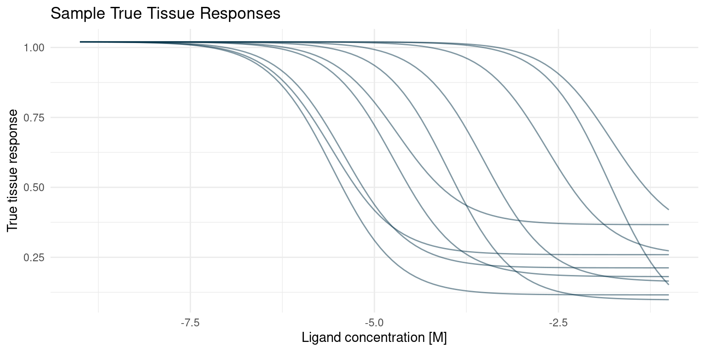
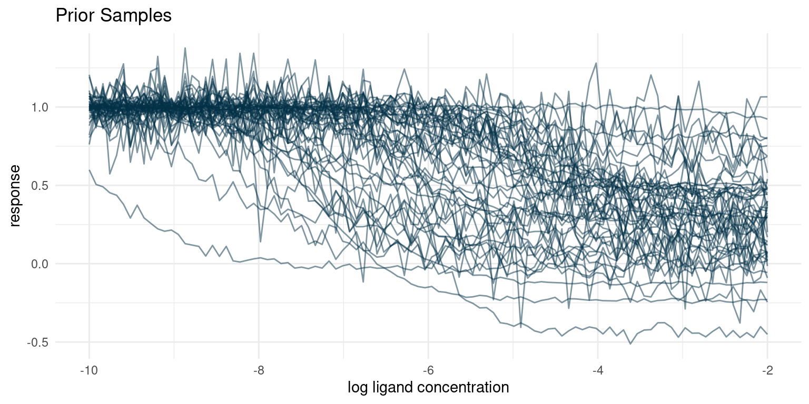
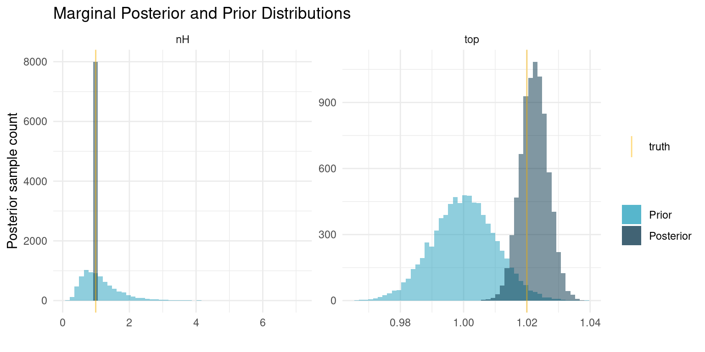
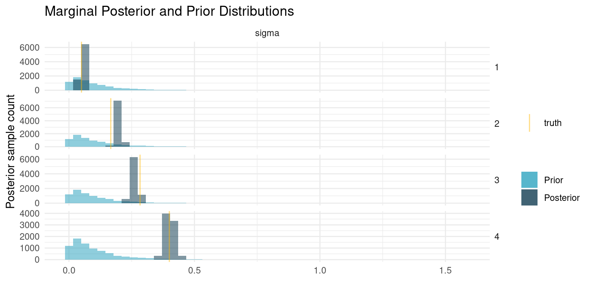
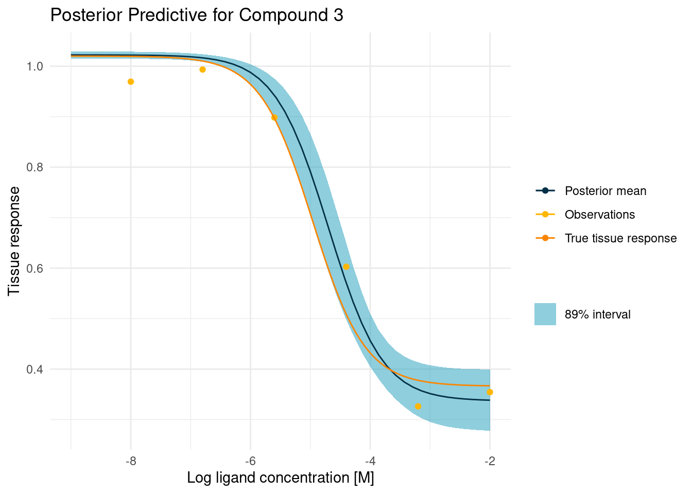
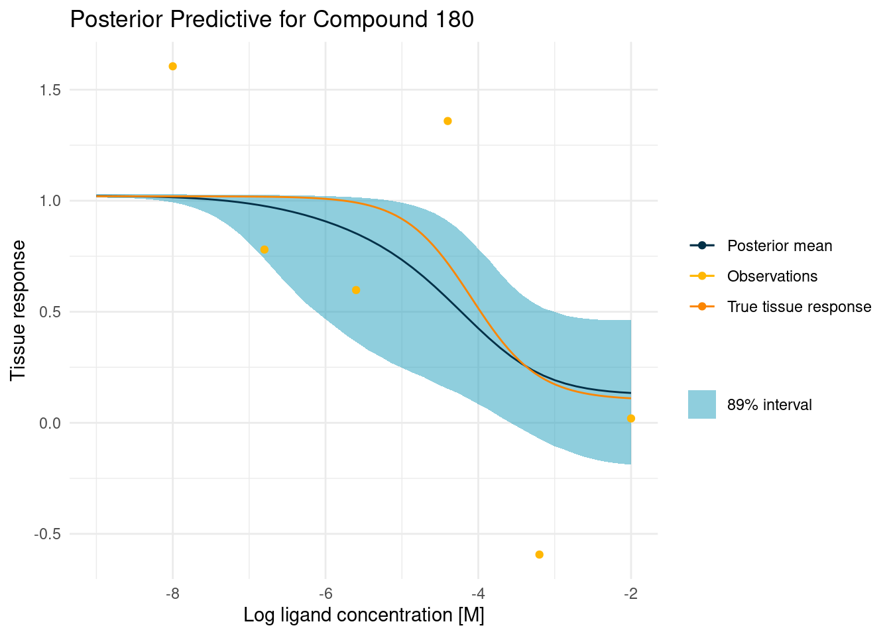

Bespoke Bayesian Model for Batch Effects in High Throughput Biochemical Assays
In previous studies, we built bespoke Bayesian models to fit observations from a biochemical assay with kinetics that could be represented by the Hill equation. Then we scaled that up to a screening experiment. In those studies, our main goal was to achieve good fits for kinetic parameters.
In this study, we extend the screening experiment to account for variance outside the kinetics of the tissue response. This can be used to account for batch variation, as is demonstrated here, but could also be used to account for other covariates of interest.
library(ggplot2)
library(magrittr)
colour <- list(
orange_dark = "#fb8500",
orange_light = "#ffb703",
blue_dark = "#023047",
azure = "#219ebc",
blue_light = "#8ecae6"
)
seed <- 4444
set.seed(seed)Generative Model
As as always the case in a Bayesian modelling workflow, we start by considering the process that generated the data. Along the way, we will generate simulations from the generative process.
The process in this case is going to be similar to the screening experiment of the previous post, but we are imagining a scenario where we perform the screening experiment in four batches. We want to combine and compare results from the four batches, but we also realise that the conditions might vary slightly between each batch, so we need some way to account for that.
Each tested compound is expected to follow a dose-response curve as described by the Hill equation.
hill_function <- function(log_conc, bottom, top, log_IC50, nH) {
top + (bottom - top)/(1 + 10^((log_IC50 - log_conc)*nH))
}In our assay, we test each compound at different concentrations and observe the corresponding response. We expect that this response is noisy
assay_response <- function(log_conc, bottom, top, log_IC50, nH, sigma) {
noise <- rnorm(length(log_conc), 0, sigma)
hill_function(log_conc, bottom, top, log_IC50, nH) + noise
}
screening_experiment <- function(parameters, log_conc) {
parameters %>%
tidyr::expand_grid(log_conc = log_conc) %>%
dplyr::mutate(
response = assay_response(log_conc, bottom, top, log_IC50, nH, sigma)
)
}Now we can define some parameters for the experiment. It is these parameters that we should be able to recover with the Bayesian model later.
We imagine an experiment of four batches with 50 compounds each. The compounds are randomly assigned to batches, so there is no correlation between batch and compound parameters. However, the batches are expected to have different levels of noise in the observations.
n_batch_size <- 50
n_batches <- 4
n_compounds <- n_batches * n_batch_size
true_parameters <- tibble::tibble(
compound = seq(1, n_compounds),
batch = rep(1:n_batches, each = n_batch_size),
bottom = 1 - rlnorm(n_compounds, -0.25, 0.125),
log_IC50 = rnorm(n_compounds, -5, 1.5) + rexp(n_compounds, 3),
top = 1.02,
nH = 0.99,
sigma = rep(seq(0.05, 0.4, length.out = n_batches), each = n_batch_size)
)Let’s plot a few curves just to make sure that we have got the generative process right.
true_curves <- purrr::pmap(
dplyr::sample_n(true_parameters, size = 10),
~ geom_function(
fun = hill_function,
args = list(
top = ..5,
bottom = ..3,
nH = ..6,
log_IC50 = ..4
),
colour = colour$blue_dark,
alpha = 0.5
)
)
p <- ggplot() +
xlim(-9, -1) +
theme_minimal() +
labs(
x = "Ligand concentration [M]",
y = "True tissue response",
title = "Sample True Tissue Responses"
)
Reduce(`+`, true_curves, init = p)
Bespoke Bayesian Model
Now that we understand the generative process and we have functions to simulate data, we can start considering a Bayesian model. We need to specify two things; a set of relations that describe the generative process and priors for any parameters. If this seems similar to what we did in the previous post, it is because it is. The Bayesian model should reflect the process that generated the data, and the process is only slightly different to what we did before. So let’s get started.
Likelihood Model
In our screening assay, we will consider Ncompound compounds j = 1, ..., Ncompound. For each compound, we measure an assay response, yij, for a number, i = 1, ..., Nmeasurement, of ligand concentrations [Aij]. We also know that the assay response averages to the tissue response, μij, but that observations are noisy. Previously, we assumed that all observations were made in the same batch, such that they had identically distributed noise. In this study, we imagine that we had to do our screening experiment in batches, k = 1, ..., Nbatch, under slightly different conditions.
$$y_{ijk} \sim {\sf Normal}(\mu_{ij}, \sigma_k)$$
Note that the noise parameter, σk, is the same for some, but not all, compounds.
The dose-response is the same as always
$$\mu_{ij} = top - \frac{bottom_j - top}{1 + 10^{(\log_{10}(IC_{50,j}) - \log_{10}([A_{ij}]))^{n_H}}}$$
Priors
For our priors, we employ the same as in the previous post
$$top \sim {\sf Normal}(1, 0.01)$$
$$n_H \sim {\sf LogNormal}(0, 0.5)$$
$$bottom_j \sim {\sf Normal}(0.25, 0.25)$$
$$\log_{10}(IC_{50,j}) \sim {\sf Normal}(-6, 1.5)$$
The only prior that is a little different is the batch noise, which is now four parameters. We expect the four parameters to be different but sampled from the same distribution.
$$\sigma_k \sim {\sf Exp}(10)$$
Let’s define a function that we can use to sample compounds from the assumed prior distributions.
prior_parameters <- function(n_compounds = NULL,
bottom_mean = NULL,
bottom_sd = NULL,
top_mean = NULL,
top_sd = NULL,
log_IC50_mean = NULL,
log_IC50_sd = NULL,
nH_meanlog = NULL,
nH_sdlog = NULL,
sigma_rate = NULL) {
tibble::tibble(
compound = seq(1, n_compounds),
bottom = rnorm(n_compounds, bottom_mean, bottom_sd),
log_IC50 = rnorm(n_compounds, log_IC50_mean, log_IC50_sd),
top = rnorm(1, top_mean, top_sd),
nH = rlnorm(1, nH_meanlog, nH_sdlog),
sigma = rexp(1, sigma_rate)
)
}Let’s also sample some dose-response curves from our assumed joint prior distribution. Hopefully the curves will be similar to those simulated from the generative model, but with a bit of noise.
priors <- list(
bottom_mean <- 0.25,
bottom_sd <- 0.25,
top_mean <- 1,
top_sd <- 0.01,
log_IC50_mean <- -6,
log_IC50_sd <- 1.5,
nH_meanlog <- 0,
nH_sdlog <- 0.5,
sigma_rate <- 10
)
replicate(
10,
rlang::exec(
prior_parameters,
n_compounds = 5,
!!!priors
),
simplify = FALSE
) %>%
dplyr::bind_rows(.id = "rep") %>%
dplyr::mutate(rep = paste0(rep, "-", compound)) %>%
screening_experiment(log_conc = seq(-10, -2, length.out = 100)) %>%
ggplot(aes(x = log_conc, y = response, group = rep)) +
geom_line(colour = colour$blue_dark, alpha = 0.5) +
theme_minimal() +
labs(
x = "log ligand concentration",
y = "response",
title = "Prior Samples"
)
The sampled dose-responses look reasonable.
Stan Implementation
The likelihood and priors are relatively straightforward to implement in Stan. Each observation now has two indexes, one linking it to a compound and one linking it to a specific batch.
writeLines(readLines("hill_equation_batch_effects.stan"))data {
int<lower=0> N;
int<lower=0> N_comp;
int<lower=0> N_batch;
int<lower=0> comp[N];
int<lower=0> batch[N];
vector[N] log_conc;
vector[N] y;
}
parameters {
real top;
vector<upper=top>[N_comp] bottom;
vector[N_comp] log_IC50;
real<lower=0> nH;
real<lower=0> sigma[N_batch];
}
model {
vector[N] mu;
bottom ~ normal(0.25, 0.25);
top ~ normal(1, 0.01);
log_IC50 ~ normal(-6, 1.5);
nH ~ normal(1, 0.01);
sigma ~ exponential(10);
for ( i in 1:N ) {
mu[i] = top + (bottom[comp[i]] - top)
/ (1 + 10^((log_IC50[comp[i]] - log_conc[i])*nH));
y[i] ~ normal(mu[i], sigma[batch[i]]);
}
}
generated quantities {
vector[N] mu;
vector[N] y_sampled;
for ( i in 1:N ) {
mu[i] = top + (bottom[comp[i]] - top)
/ (1 + 10^((log_IC50[comp[i]] - log_conc[i])*nH));
y_sampled[i] = normal_rng(mu[i], sigma[batch[i]]);
}
}Now we can condition the model on some training data. We simulate some data, compile an input for the Stan model, and sample from the posterior
assay_window <- seq(-8, -2, length.out = 6)
observations <- screening_experiment(
parameters = true_parameters,
log_conc = assay_window
)
data <- list(
N = nrow(observations),
N_comp = n_compounds,
N_batch = n_batches,
comp = observations$compound,
batch = observations$batch,
log_conc = observations$log_conc,
y = observations$response
)
post <- rstan::stan_model("hill_equation_batch_effects.stan") %>%
rstan::sampling(
data = data,
chains = 4,
cores = 4,
iter = 4000,
seed = seed
)
# Extract samples from the posterior distribution
posterior_samples <- tibble::as_tibble(rstan::extract(post))Model Evaluation
Before diving into the posterior distribution, we should check to see that we have good quality samples for each parameter
post_summaries <- rstan::summary(
post,
probs = NULL
)$summary
tibble::as_tibble(post_summaries) %>%
dplyr::select(-c(mean, se_mean, sd)) %>%
dplyr::mutate(parameter = rownames(post_summaries), .before = 1) %>%
dplyr::mutate(dplyr::across(-parameter, round, digits = 3)) %>%
dplyr::arrange(desc(Rhat)) %>%
dplyr::slice_head(n = 10) %>%
knitr::kable()| parameter | n_eff | Rhat |
|---|---|---|
| bottom[25] | 308.722 | 1.009 |
| log_IC50[25] | 389.533 | 1.006 |
| mu[1178] | 718.568 | 1.005 |
| mu[1179] | 907.454 | 1.005 |
| log_IC50[197] | 1025.443 | 1.004 |
| mu[542] | 1471.156 | 1.004 |
| mu[543] | 2084.679 | 1.004 |
| mu[1177] | 851.739 | 1.004 |
| mu[129] | 2058.746 | 1.003 |
| mu[149] | 668.907 | 1.003 |
R̂ < 1.01 for all parameters and it looks like we have at least a couple hundred effective samples, so we should be ready to look at the posterior distribution.
Shared Parameters
Let’s start with a look at nH and top which are shared parameters among all compounds
# True parameters of the simulation.
truth <- true_parameters %>%
dplyr::slice_head(n = 1) %>%
tidyr::pivot_longer(
dplyr::everything(),
names_to = "parameter",
values_to = "truth"
)
# A number of draws from our priors to match the number of draws we have from
# the posterior
prior_samples <- replicate(
nrow(posterior_samples),
rlang::exec(
prior_parameters,
n_compounds = 1,
!!!priors
),
simplify = FALSE
) %>%
dplyr::bind_rows() %>%
dplyr::select(top, nH) %>%
tidyr::pivot_longer(
dplyr::everything(),
names_to = "parameter",
values_to = "sample"
)
# Plot each of the marginal distributions, comparing prior, posterior, and true
# simulation parameters
posterior_samples %>%
dplyr::select(top, nH) %>%
tidyr::pivot_longer(
dplyr::everything(),
names_to = "parameter",
values_to = "sample"
) %>%
dplyr::left_join(truth, by = "parameter") %>%
ggplot() +
geom_histogram(
data = prior_samples,
mapping = aes(x = sample, fill = "Prior"),
bins = 50,
alpha = 0.5
) +
geom_histogram(aes(x = sample, fill = "Posterior"), bins = 50, alpha = 0.5) +
geom_vline(aes(xintercept = truth, colour = "truth"), alpha = 0.5) +
facet_wrap(~ parameter, scales = "free") +
theme_minimal() +
scale_colour_manual(values = c("truth" = colour$orange_light)) +
scale_fill_manual(values = c(
"Prior" = colour$azure,
"Posterior" = colour$blue_dark
)) +
labs(
y = "Posterior sample count",
x = "",
colour = "",
fill = "",
title = "Marginal Posterior and Prior Distributions"
)
We seem to have recovered the true underlying parameters nicely.
Next up is the batch noise. We had four batches so there are four noise parameters, and hopefully they look different
# True parameters of the simulation.
truth <- true_parameters %>%
dplyr::select(batch, sigma) %>%
dplyr::distinct() %>%
tidyr::pivot_longer(
-batch,
names_to = "parameter",
values_to = "truth"
)
unpack_matrix <- function(data, cols) {
for (col in cols) {
mat <- data[[col]]
for (i in 1:dim(mat)[[2]]) {
cname <- paste0(col, i)
data <- dplyr::mutate(data, "{cname}" := mat[,i])
}
}
dplyr::select(data, -dplyr::all_of(cols))
}
# A number of draws from our priors to match the number of draws we have from
# the posterior
prior_samples <- replicate(
nrow(posterior_samples),
rlang::exec(
prior_parameters,
n_compounds = 1,
!!!priors
),
simplify = FALSE
) %>%
dplyr::bind_rows() %>%
dplyr::select(sigma) %>%
tidyr::pivot_longer(
dplyr::everything(),
names_to = "parameter",
values_to = "sample"
)
# Plot each of the marginal distributions, comparing prior, posterior, and true
# simulation parameters
lapply(1:n_batches, function(i) {
tibble::tibble(
sigma = posterior_samples$sigma[,i],
batch = i
)
}) %>%
dplyr::bind_rows() %>%
tidyr::pivot_longer(
-batch,
names_to = "parameter",
values_to = "sample"
) %>%
dplyr::left_join(truth, by = c("parameter", "batch")) %>%
ggplot() +
geom_histogram(
data = prior_samples,
mapping = aes(x = sample, fill = "Prior"),
bins = 50,
alpha = 0.5
) +
geom_histogram(aes(x = sample, fill = "Posterior"), bins = 50, alpha = 0.5) +
geom_vline(aes(xintercept = truth, colour = "truth"), alpha = 0.5) +
facet_grid(rows = vars(batch), cols = vars(parameter), scales = "free") +
theme_minimal() +
theme(strip.text.y = element_text(angle = 0)) +
scale_colour_manual(values = c("truth" = colour$orange_light)) +
scale_fill_manual(values = c(
"Prior" = colour$azure,
"Posterior" = colour$blue_dark
)) +
labs(
y = "Posterior sample count",
x = "",
colour = "",
fill = "",
title = "Marginal Posterior and Prior Distributions"
)
Our model has successfully recovered the noise parameter for each batch, even though they are different.
Posterior Curves
It is cool that we are able to recover different noise levels for each batch. However, it is important that this does not come at the cost of worse dose-response curve fits. So let’s check that we are still able to determine good curve parameters.
I have deliberately chosen one easy and one challenging curve.
example_curves <- tibble::tibble(curve = c(3, 180))
example_curves$post_pred <- purrr::map(example_curves$curve, function(i) {
posterior_samples %>%
dplyr::sample_n(4000) %>% # Ran out of RAM...
dplyr::mutate(
log_IC50 = log_IC50[, i],
bottom = bottom[, i]
) %>%
tidyr::expand_grid(log_conc = seq(-2, -9, length.out = 50)) %>%
dplyr::mutate(tissue_response = purrr::pmap_dbl(
list(log_conc, bottom, top, log_IC50, nH),
hill_function
)) %>%
dplyr::group_by(log_conc) %>%
dplyr::summarise(
response_mean = mean(tissue_response),
response_upper = quantile(tissue_response, probs = 0.945),
response_lower = quantile(tissue_response, probs = 0.055)
) %>%
ggplot() +
geom_ribbon(
aes(
x = log_conc,
ymin = response_lower,
ymax = response_upper,
fill = "89% interval"
),
alpha = 0.5
) +
geom_line(aes(
x = log_conc,
y = response_mean,
colour = "Posterior mean"
)) +
geom_point(
data = dplyr::filter(observations, compound == i),
aes(x = log_conc, y = response, colour = "Observations")
) +
geom_function(
fun = hill_function,
args = true_parameters[i, -c(1,2,7)],
mapping = aes(colour = "True tissue response")
) +
labs(
y = "Tissue response",
x = "Log ligand concentration [M]",
colour = "",
fill = "",
title = paste("Posterior Predictive for Compound", i)
) +
scale_fill_manual(values = c("89% interval" = colour$azure)) +
theme_minimal()
})
example_curves$post_pred_coloured <- purrr::map(
example_curves$post_pred,
function(p) {
p + scale_colour_manual(values = c(
"Posterior mean" = colour$blue_dark,
"Observations" = colour$orange_light,
"True tissue response" = colour$orange_dark
))
}
)For the well-behaved curve, all looks good and the uncertainty around the key parameters is fairly small.
example_curves$post_pred_coloured[[1]]
Even in the difficult case, we get a decent fit, demonstrating that we can still get good curves even with the addition of additional parameters to account for batch effects.
example_curves$post_pred_coloured[[2]]
Perspective
In this post, we extended our model for the dose-response screening experiment to also include batch effects. We demonstrated that batch effects can be recovered without compromising on curve parameter quality.
Accounting for batch effects is already very useful, but the approach can be expanded to even more useful situations. Imagine, for instance, a case where the model includes expressions that relate either efficacy or potency to known variations among compounds. That way we combine the power of screening assays with the structure of experiments and possibly derive much more information from our hard earned data.
Anders E. Nielsen
Data Professional & Research Scientist
I apply modern data technology to solve real-world problems. My interests include statistics, machine learning, computational biology, and IoT.